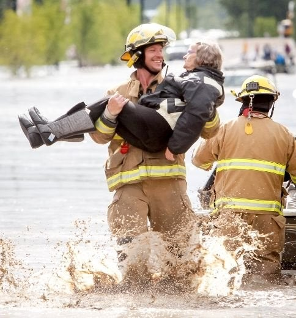

Firefighter

Firefighters
What is it that Firefigthers do?


Firefighters do many things. They fight against the fire and save people in danger in
different situations
They have the EMT certificate that is the people who give first aid.
Firefighters put out the fire and help people who are in need.
The Benefits

Some benefits are you can have that satisfaction that saved a person from death.
1. $76,000 and up
2. Health insurance and covered dentist
3. Firefighters have 5 days of vacation. They work 10/31 days of the month.
4. They can be near the fire without problem
The Requirements


EMT and Fire Academy
EMT(First Responders)
Graduation from an academy.
Academy of 12-14 weeks total 600 training hours
Be able to work with a team
Being healthy
Anaheim Fire Chief
Pat Russell
He has 35 years in service.
He is in charge of the Anaheim firefighters
He did everything it takes to be a firefighter
He is not risking too much entering the houses that are on fire
Heroes



Firefighters are like heroes because they save people who are in danger.
5 Reasons why they are heroes
4 year old girl
Firefighter Jumping Rescue
They leave their family to save those who are not from their family